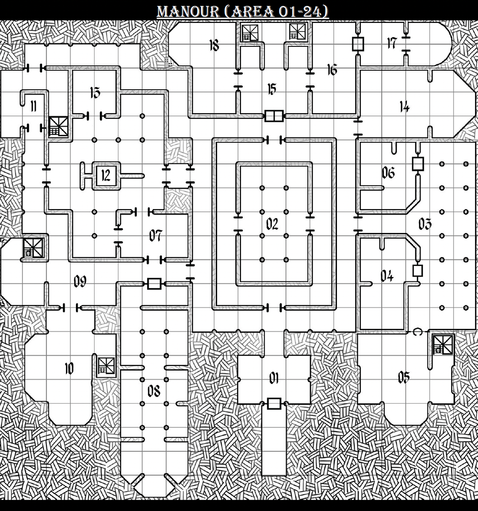

Danger Level. Risky. (2rds)
Light. Darkness.
Random Encounters
Manor, Day
| d4 | details |
|---|---|
| 1 | Two vampire thralls cross the hall carrying a covered basket of food and a stoppered flask of blood |
| 2 | A vampire spawn disguised in a servant's cloak walks from Area 05 toward Area 18. It watches the characters but does not attack unless exposed |
| 3 | A thrall gardener hides a small stolen treasure in a flowerpot. It begs the characters not to tell the seneschal |
| 4 | A captured woodcutter, watched by a thrall, is being taken to Area 29 to work on the roots |
Manor, Night
| d4 | details |
|---|---|
| 1 | 1d4 vampire spawn patrol the halls, searching for a missing thrall |
| 2 | Two thralls sneak away from their duties to drink from a blood cask in Area 25 |
| 3 | A vampire courtier and two spawn move from Area 23 to Area 28 for a private audience with Malakar |
| 4 | Two vampire spawn return from the forest carrying a bound Rune-Elk Elf. They intend to take the prisoner to Area 32 |

Main Floor
Upper Floor
Undercroft & Vaults
OTHER INFO
Suggested party: 5th-7th level. The sprawling subterranean palace of Lord Malakar and the Obsidian Court.
The Manor.
Beneath the ancient roots of the Emerald Wood lies the Crimson Manor, a sprawling subterranean palace belonging to Lord Malakar and the Obsidian Court. Its upper chambers are hidden beneath an overgrown woodland estate. Its lower halls have been excavated through the roots and bedrock, and its oldest rooms are grown from the petrified remains of trees that stood before the forest.
The manor is not a ruin. It is a working household and the seat of a vampire court. Thralls maintain the rooms, prepare blood and food, tend the gardens, and guard the approaches. Vampire spawn serve as soldiers, hunters, and attendants. The older vampires sleep through the day and gather at night.
The court is at war with the Rune-Elk Elves. The elves cultivate moon-blossoms and phosphorescent fungi to deny the vampires the darkness they need. Malakar's thralls cut sacred trees and widen the underground halls in response. The manor's gardens are therefore both beautiful and strategic: some are cultivated to conceal the entrance, while others are experiments in growing plants that can survive without sunlight.
Areas 01-18: ground floor and gardens. Areas 19-24: upper floor. Areas 25-43: undercroft and vault.
The Court: Day.
Lord Malakar and most full vampires rest in sealed coffins in Area 23 and the deeper chambers. They do not willingly expose themselves to daylight.
Vampire spawn and thralls remain active. Thralls maintain the manor, tend the gardens, move supplies, and guard entrances. Any spawn not assigned to a post may be found in Areas 28, 32, or 35.
The manor's gardens are bright with moon-blossoms and phosphorescent fungi. These plants are tended carefully and are not to be trampled.
Malakar's seneschal manages visitors and household affairs from Area 20.
The Court: Night.
Lord Malakar rises and moves through the manor. He may be found in Area 20, 23, or 28 depending on the situation.
Vampire spawn patrol in pairs. Thralls carry hooded lanterns and sound bells or horns when they discover intruders.
Gargoyles and other stone guardians awaken at dusk in areas marked below.
The moon-blossoms close their petals after midnight. The manor's gardens become much darker, and the vampires move freely through them.
Malakar summons his court to Area 28 for an audience when an alarm is raised or when he wishes to make an example of a disobedient thrall.
Alarm.
The manor does not immediately attack as one. An alarm begins locally and spreads:
1. A guard who spots intruders attempts to sound a bell or horn.
2. Nearby thralls retreat toward the nearest guarded room and alert a vampire spawn.
3. Spawn investigate in pairs. They attempt to capture intruders for Malakar rather than kill them immediately.
4. If the alarm reaches Area 23 or 28, Malakar is informed. He sends spawn to block exits while he approaches personally.
5. If Malakar believes the intruders threaten his court, he orders all thralls to seal the surface entrances.
Doors and Light.
Ordinary doors can be unlocked quietly with a DC 15 DEX check or forced with a DC 14 STR check.
During the day, most doors are unlocked. The doors to Areas 23 and 24 are locked.
At night, doors to private chambers, the gallery, and the vault approach are locked. Keys are held by the seneschal, the senior spawn, and Malakar.
The doors to Areas 35-40 and 43 are sealed by old blood-magic and cannot be opened by ordinary means. The key or seal is described in the relevant area.
During the day, areas with windows or open roofs are naturally lit. Areas 08, 11, 21, and the entire undercroft are dark unless lit by fungi, lamps, or other sources.
At night, Areas 02, 03, 07, and 09 are dimly lit. The remaining areas are dark unless noted.
Vampires, Spawn, and Thralls.
Use the Shadowdark vampire monster for Lord Malakar and the full vampires of his court. Use the same vampire entry for vampire spawn, but reduce their HP by half; spawn are less experienced and do not possess Malakar's magic items or authority.
Vampire thralls are living humanoids under the Court's control. Use the peasant statblock. Most are frightened servants rather than loyal fanatics. A thrall who is given a chance to escape may flee, hide, or help the characters.
Pieces of Conversation (d8).
1. “The flowers are closing earlier every night. The elves are changing the garden again.”
2. “Don't look into the master's coffin. He knows when someone has touched it.”
3. “The strongbox is behind the botany books. The seneschal keeps the key, but the master keeps the other one.”
4. “There is a passage behind the old root in the boiler room.”
5. “The master wants the woodcutters taken below before dawn. He says the roots must be opened.”
6. “Something is moving in the cistern. The spawn won't go down there anymore.”
7. “The pale one in the greenhouse doesn't sleep. I saw it standing in the rain with its face turned toward the moon.”
8. “The loose stone by the courtyard columns hides a purse. The old servants put it there before the court came.”
The Undercroft: Areas 25-43.
The undercroft is the true heart of the Crimson Manor. Its halls are older than the surface estate and run through the roots of the Emerald Wood. The walls are damp, and in places enormous roots have broken through the stone. The Obsidian Court uses this level for its servants, blood stores, training, and the protection of Malakar's vault.
The manor's thralls are not all willing servants. Some were taken from the forest, some were born below, and others were promised safety from the elves or the dangers of the Wastes. Many will help intruders if they believe Malakar's hold over them can be broken.
Doors and light. Ordinary doors can be unlocked quietly with a DC 15 DEX check or forced with a DC 14 STR check. The cellar, boiler room, and private sauna are locked. The sealed door between Areas 35 and 40 and the vault door in Area 43 require the blood seal and key described below. Area 25 is completely dark. Areas 26 and 28 have dim fungus-light. The remaining chambers are dark unless noted.
Running Lord Malakar.
Lord Malakar is an ancient vampire and the master of the Obsidian Court.
Day. Malakar rests in his coffin in Area 23. If the coffin is disturbed, he awakens and attempts to escape into the deeper manor before confronting intruders.
Night. Malakar moves between Areas 20, 23, and 28. He prefers to let spawn and thralls exhaust intruders before revealing himself.
If reduced to half HP, Malakar withdraws toward Area 43 or his coffin. He bargains if doing so might preserve the Heart of the Crimson Root.
Malakar does not willingly fight in the direct light of a moon-blossom or in sunlight. He tries to destroy or smother such sources before engaging.
Malakar's key opens Area 43. The seneschal's false key does not.